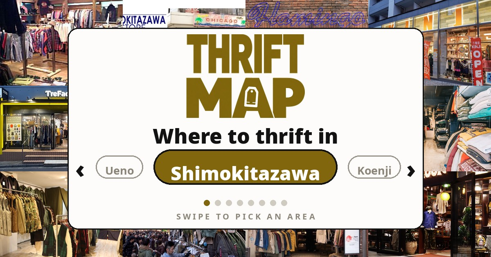
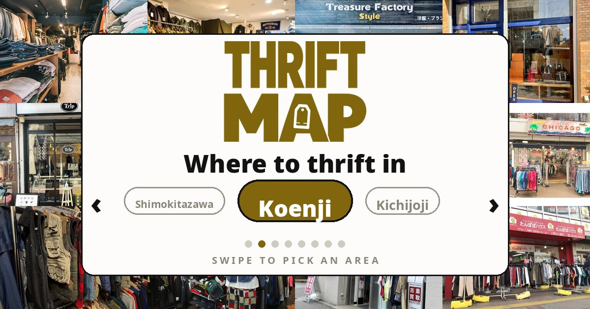
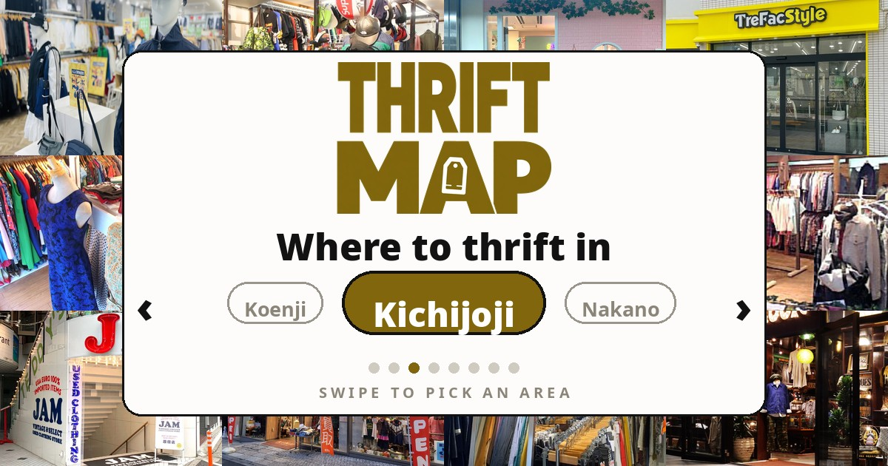
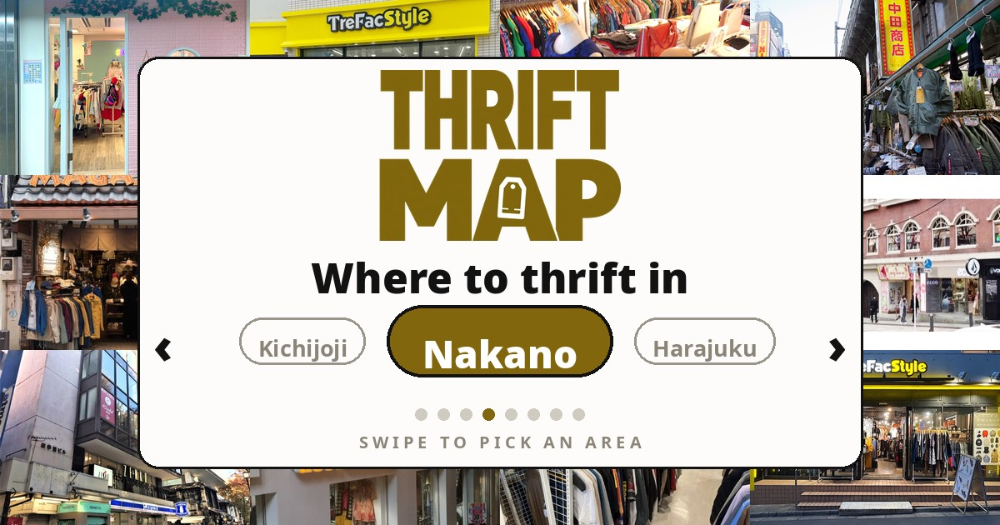
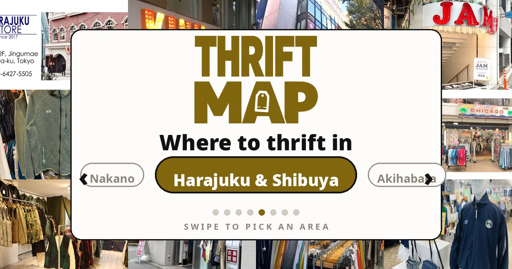

Rebuilt in eatmap's OGP composition: a collage of real shop photos behind a white card with the THRIFT MAP logo, “Where to thrift in”, the area carousel and swipe dots. Same composition in all five — they differ by the lead area on the card and the photos in the collage. Pick a number and that one becomes the official og:image (the same composition is then generated for every area page).





Page: yukitchy.github.io/booking-trends-board/thrift-map/
Reply with a number (1–5) to set the official OGP. Until then the page keeps its provisional OGP.